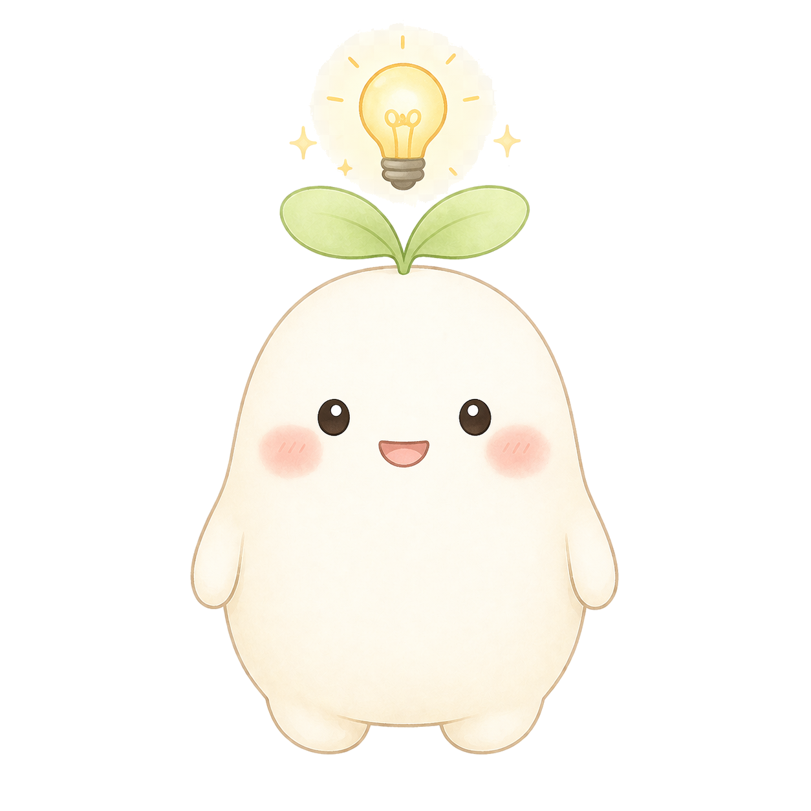
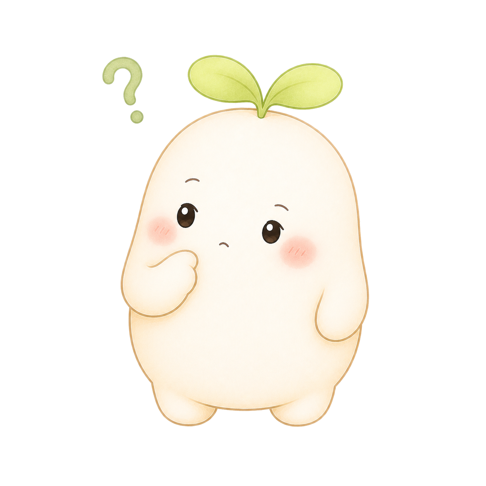
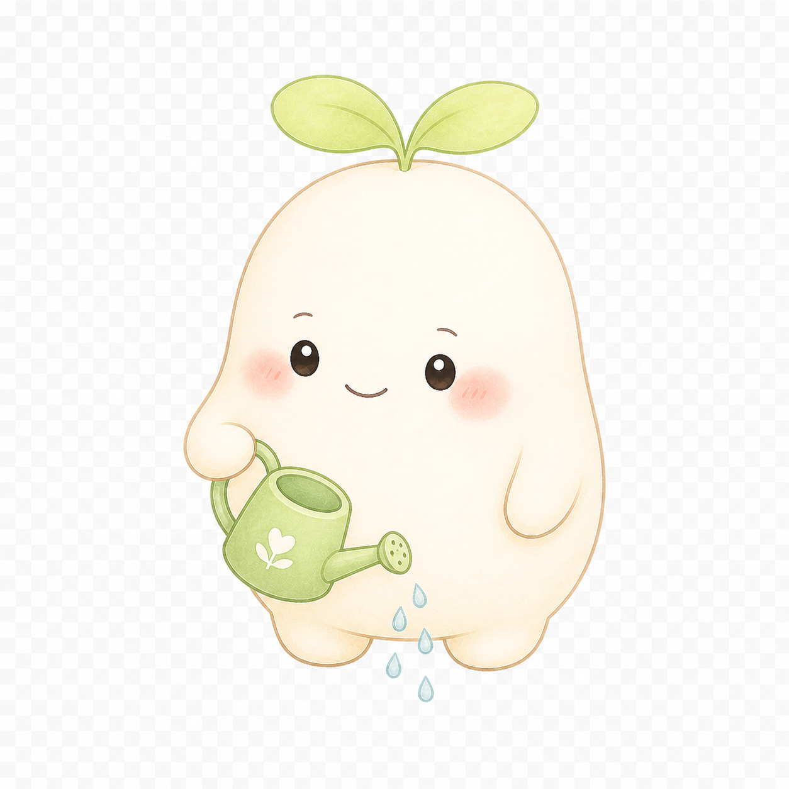
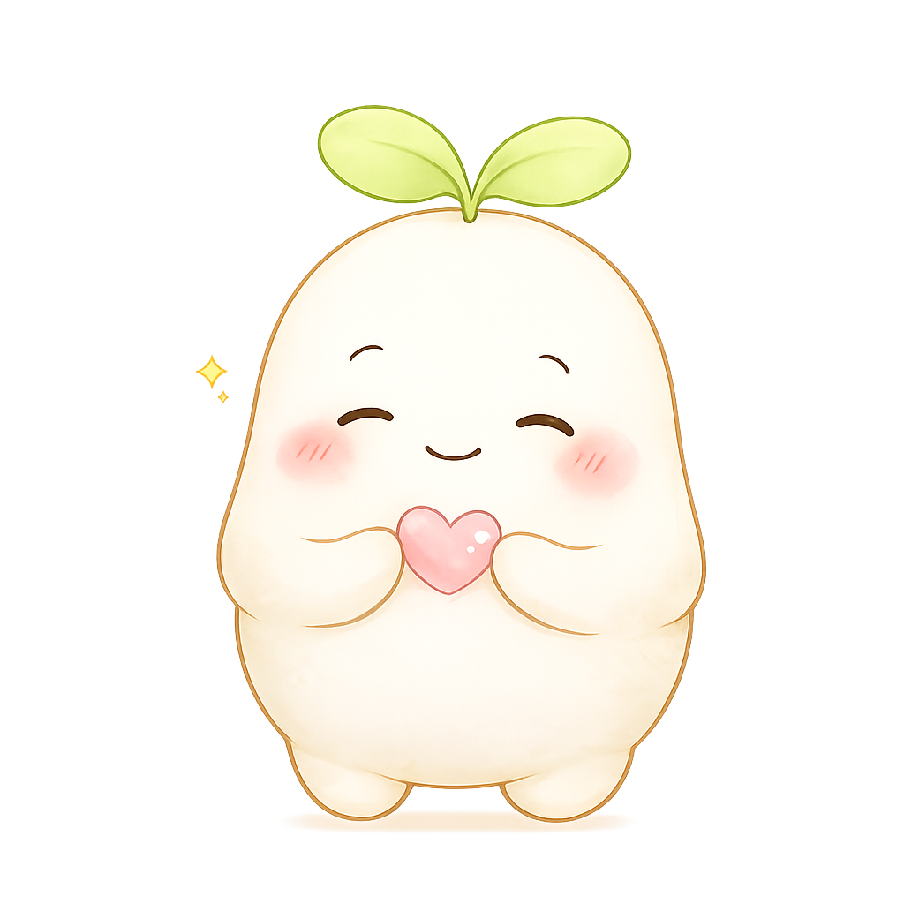
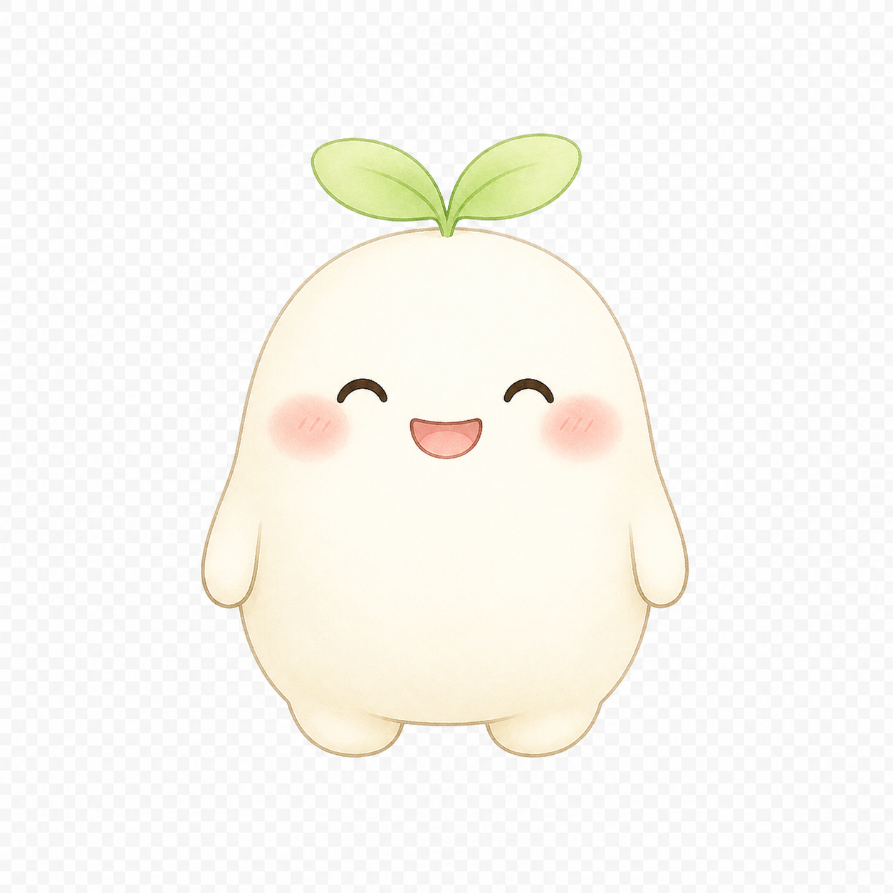

こんにちは。今週も、少しだけ一緒に整理してみよう🌱
🌿 今週やること
気分と考えを、分けてみよう
最近あった出来事を振り返りながら、そのときの気分と、浮かんだ考えを一緒に整理してみよう。
今日やること
最近、気持ちが動いた出来事を1件だけ思い出してみる
最近見つけたこと
「迷惑をかけてはいけない」という考えが、仕事でも家庭でも出やすいみたい。
いまの進み具合 〜散歩の途中〜
…自分を知る ─ 生活を整える ─ 考え方のクセに気づく（いまここ） ─ 新しい行動を試す …
※ 順番は決まっていません。戻ってもOK。

心の地図一緒に描いてきた、今のあなた
気になるところは、いつでもタップして直してね。すぷらんの見立ては、ぜんぶ「かもしれない」だよ。
🎯 今困っていること
- 仕事のことを考えると不安
- 寝つきが悪い
- 人に頼れない
🌱 あなたの強み
- 責任感がある
- 粘り強い
- 周りに配慮できる
💭 よく浮かぶ考え
- 迷惑をかけてはいけない
- 自分で解決しなきゃ
💧 気分・体の反応
- 不安・焦り・自責
- 動悸・眠れない
🔁 悪循環（図で見る）→
失敗を恐れて抱える → 疲れて効率が落ちる → 自信が減る → もっと頑張る
🤍 助けになること
- 朝に日光を浴びる
- 作業を小さく分ける
🚶 今取り組んでいること
- 人に少し頼る練習
🗝 心の奥にあるルール（そっと・仮説）
もしかすると「頼ると相手に迷惑をかける」という感覚が、根っこにあるのかも。近い感じはある？
もしかすると「頼ると相手に迷惑をかける」という感覚が、根っこにあるのかも。近い感じはある？
✨ 最近の変化
以前：失敗したら終わりだ
最近：失敗しても、やり直せるかもしれない
最近：失敗しても、やり直せるかもしれない

悪循環いま、こんな流れが続いているみたい
出来事：上司から返信がない
↓
浮かんだ考え：嫌われたかも
↓
気分・体：不安・動悸
↓
行動：何度も確認 / 抱え込む
↓
結果：疲れて自信が減る
↺ またはじめに戻る
この輪のどこか1か所を、ほんの少しゆるめるのが「小さな一歩」。すぷらんと一緒に探していこう。

きろくこれまで歩いてきた道
🚶 散歩の軌跡
自分の状態を整理した
└▶ 生活リズムに取り組んだ
└▶ よく浮かぶ考えを見つけた ↩再訪
└▶ 人に頼ることを考えた（いまここ）
└▶ 生活リズムに取り組んだ
└▶ よく浮かぶ考えを見つけた ↩再訪
└▶ 人に頼ることを考えた（いまここ）
一本道じゃなくていい。寄り道も、戻るのもぜんぶ記録。
✅ やってきたこと
最近の出来事を整理した気分と考えを分けてみた別の見方を探した小さな行動を試した
📈 気分・生活の変化
記録した日だけ、そっとプロット（毎日の記録は不要）

サポートひとりで抱えなくて、大丈夫
💬 すぷらんに話す
今週のテーマと関係なく、いま話したいことをそのまま。
🧑⚕️ 心理士に相談（準備中）
必要なとき、あなたの同意のうえで心の地図を引き継いで、専門家につなげます。
緊急時の相談先（いつでも）

設定あなたに合わせて
AIとの関わり方
※ 変わるのは話し方とテンポだけ。安全とリスク対応は共通です。
やさしく寄り添う論理的に整理少し背中を押す質問しながら一緒に
プロフィール／利用プラン／プライバシー・データ（デモでは省略）
本アプリは治療・診断を行うものではなく、セルフケアを支援するものです。緊急時・症状が重い場合は専門機関へ。